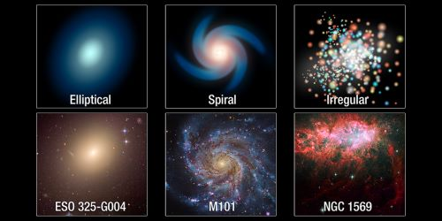
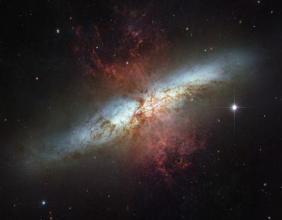
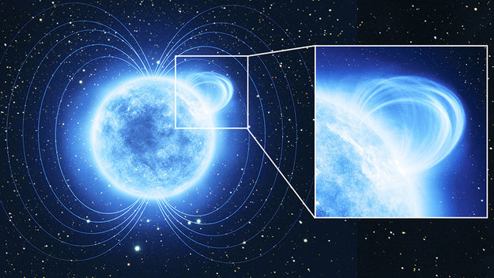

The building blocks of the universe

Galaxies are vast cosmic islands of stars, gas, dust, and dark matter held together by gravity. Hubble’s keen eye has revealed intricate details of the shapes, structures, and histories of galaxies — whether alone, as part of small groups, or within immense clusters. From supermassive black holes at galactic centers to giant bursts of star formation to titanic collisions between galaxies, these discoveries allow astronomers to probe the current properties of galaxies as well as examine how they formed and developed over time.
What Kinds of Galaxies Are There?
Astronomers classify galaxies into three major categories: elliptical, spiral and irregular. These galaxies span a wide range of sizes, from dwarf galaxies containing as few as 100 million stars to giant galaxies with more than a trillion stars.
Ellipticals, which account for about one-third of all galaxies, vary from nearly circular to very elongated. They possess comparatively little gas and dust, contain older stars and are not actively forming stars anymore. The largest and rarest of these, called giant ellipticals, are about 300,000 light-years across. Astronomers theorize that these are formed by the mergers of smaller galaxies. Much more common are dwarf ellipticals, which are only a few thousand light-years wide.
Spiral galaxies appear as flat, blue-white disks of stars, gas and dust with yellowish bulges in their centers. These galaxies are divided into two groups: normal spirals and barred spirals. In barred spirals, the bar of stars runs through the central bulge. The arms of barred spirals usually start at the end of the bar instead of from the bulge. Spirals are actively forming stars and comprise a large fraction of all the galaxies in the local universe.
Irregular galaxies, which have very little dust, are neither disk-like nor elliptical. Astronomers often see irregular galaxies as they peer deeply into the universe, which is equivalent to looking back in time. These galaxies are abundant in the early universe, before spirals and ellipticals developed.
Aside from these three classic categories, astronomers have also identified many unusually shaped galaxies that seem to be in a transitory phase of galactic development. These include those in the process of colliding or interacting, and those with active nuclei ejecting jets of gas.
NASA
What Is Dark Matter?
We are much more certain what dark matter is not than we are what it is. First, it is dark, meaning that it is not in the form of stars and planets that we see. Observations show that there is far too little visible matter in the universe to make up the 27% required by the observations. Second, it is not in the form of dark clouds of normal matter, matter made up of particles called baryons. We know this because we would be able to detect baryonic clouds by their absorption of radiation passing through them. Third, dark matter is not antimatter, because we do not see the unique gamma rays that are produced when antimatter annihilates with matter. Finally, we can rule out large galaxy-sized black holes on the basis of how many gravitational lenses we see. High concentrations of matter bend light passing near them from objects further away, but we do not see enough lensing events to suggest that such objects to make up the required 25% dark matter contribution.
However, at this point, there are still a few dark matter possibilities that are viable. Baryonic matter could still make up the dark matter if it were all tied up in brown dwarfs or in small, dense chunks of heavy elements. These possibilities are known as massive compact halo objects, or "MACHOs". But the most common view is that dark matter is not baryonic at all, but that it is made up of other, more exotic particles like axions or WIMPS (Weakly Interacting Massive Particles). NASA

Starburst

Stars are created within galaxies from a reserve of cold gas that forms into giant molecular clouds. Some galaxies have been observed to form stars at an exceptional rate, which is known as a starburst. If they continue to do so, then they would consume their reserve of gas in a time span less than the lifespan of the galaxy. Hence starburst activity usually lasts for only about ten million years, a relatively brief period in the history of a galaxy. Starburst galaxies were more common during the early history of the Universe, and, at present, still contribute an estimated 15% to the total star production rate.
Starburst galaxies are characterized by dusty concentrations of gas and the appearance of newly formed stars, including massive stars that ionize the surrounding clouds to create H II regions. These massive stars produce supernova explosions, resulting in expanding remnants that interact powerfully with the surrounding gas. These outbursts trigger a chain reaction of star building that spreads throughout the gaseous region. Only when the available gas is nearly consumed or dispersed does the starburst activity end.
Starbursts are often associated with merging or interacting galaxies. The prototype example of such a starburst-forming interaction is M82, which experienced a close encounter with the larger M81. Irregular galaxies often exhibit spaced knots of starburst activity.
NASA
Magnetic fields

Galaxies have magnetic fields of their own.[96] They are strong enough to be dynamically important: they drive mass inflow into the centers of galaxies, they modify the formation of spiral arms and they can affect the rotation of gas in the outer regions of galaxies. Magnetic fields provide the transport of angular momentum required for the collapse of gas clouds and hence the formation of new stars.
The typical average equipartition strength for spiral galaxies is about 10 μG (microGauss) or 1 nT (nanoTesla). For comparison, the Earth's magnetic field has an average strength of about 0.3 G (Gauss or 30 μT (microTesla). Radio-faint galaxies like M 31 and M 33, our Milky Way's neighbors, have weaker fields (about 5 μG), while gas-rich galaxies with high star-formation rates, like M 51, M 83 and NGC 6946, have 15 μG on average. In prominent spiral arms the field strength can be up to 25 μG, in regions where cold gas and dust are also concentrated. The strongest total equipartition fields (50–100 μG) were found in starburst galaxies, for example in M 82 and the Antennae, and in nuclear starburst regions, for example in the centers of NGC 1097 and of other barred galaxies.
Wikipedia